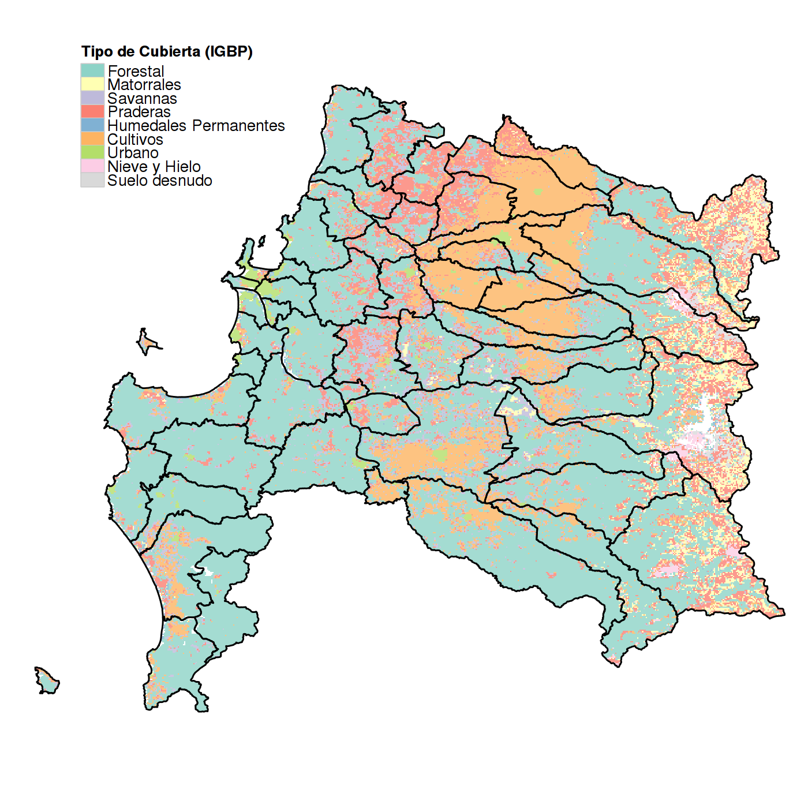

Sequía Agrícola
Exámen de Calificación
Francisco Zambrano Bigiarini
Doctorando en Ingeniería Agrícola c/m en Recursos Hídricos
1.- Contexto
Definición de Sequía
- Es un fenómeno rastrero (Gillette, 1950)
- La sequía es el desastre natural más complejo de identificar, analizar, monitorear y manejar (Burton, Kates, & White, 1978, p. 240; Wilhite,1993).
- Las diferentes variables hidrometeorológicas y factores socioeconómicos, así como la naturaleza estocástica de la demanda de agua, es un obstaculo para una definición precisa (Mishra and Singh, 2010).
- En una forma realista la definición de sequía debe ser para una región y aplicación (o impacto) específico (Wilhite and Glantz, 1985).
- "The impracticality of a universal drought definition" (Lloyd, 2014)
Tipos de Sequía
Investigaciones Relevantes
- Standarized Precipitation Index (SPI) (Mckee, 1993) "The relationship of drought frecuency and duration to time scales"
- Vegetation Condition Index (VCI) (Kogan, 1990) "Remote sensing of weather impacts on vegetation in non-homogeneous areas"
- Temperature Condition Index (TCI) (Kogan, 1995) "Application of vegetation index and brightness temperature for drought detection"
- Vegetation Health Index (VHI) (Kogan, 1997) "Global drought watch from space"
- Standarized Vegetation Index (SVI) (Peters et al, 2002) "Drought Monitoring with NDVI-Based Standarized Vegetation Index"
- Precipitation Condition Index (PCI) and Scaled Drought Condition Index (SDCI) (Rhee et al, 2010) "Monitoring agricultural drought for arid and humid regions using multi-sensor remote sensing data"
- Synthesized Drought Index (SDI) (Du et al, 2013) "A comprehensive drought monitoring method integrating MODIS and TRMM data"
Investigaciones Relevantes
- Standarized Precipitation Evapotranspiration Index (SPEI) (Vicente-Serrano et al, 2010) "A Multiscalar Drought Index Sensitive to Global Warming: The Standardized Precipitation Evapotranspiration Index"
Indicadores de Sequía
Tipos de Indicadores (Forma de Cálculo)
- Estandarizados
- SPI
- SPEI
- SVI
- Zratio
- Escalados
- VCI
- TCI
- PCI
- Combinados
- VHI
- SDCI
Índice Estandarizado de Precipitación (SPI)

Características
- Sólo utiliza precipitación
- Permite utilizar diferentes escalas de tiempo
- Comparable espacialmente
SPI Estación UdeC Chillán, 1, 3, 6 , 12 meses
Índice de Condición de la Vegetación (VCI)
\[ VCI = \frac{NDVI-NDVI_{min}}{NDVI_{max}-NDVI_{min}} \]
Caracteristica
"Separa la componente climática de la vegetacional"
Índice de Condición de la Vegetación (VCI)
2.- Declaración del Problema
¿Que hay en Chile?
- La Dirección Meteorológica de Chile (DMC) realiza el calculo del SPI

- Atlas de Sequía ALC (CAZALAC) (Nuñez et al.,2011)
- Periodo de Retorno
- Máxima precipitación esperada
- Mínima precipitación esperada

¿Que hay en Chile?
ClimateDataLibrary (www.climatedatalibrary.cl/maproom)

¿Qué hace falta?
- Evaluación conjunta entre los déficit de precipitaciones y la respuesta de la vegetación.
- Evaluación de la sequía agrícola a diferentes escalas temporales y espaciales.
- Una mejor compresión de la sequía desde el punto de vista de la componente agrícola.
¿Qué se propone?
- "Evaluar multiples indicadores de sequía meteorológia y agrícola a diferentes escalas temporales y espaciales en la zona agrícola centro sur de Chile"
3.- Avances de la Investigación
Fuentes de información utilizada
Satelital
MODIS
- MOD13 (Vegetación)
- MOD11 (T° Superficial de Suelo)
- MCD12 (Cubierta Terrestre)
TRMM
- 3B42 versión 7
Puntual
- Datos de precipitación
- Dirección Meteorológica de Chile (DGA)
- Dirección General de Aguas (DGA)
- Otras fuentes
Herramientas de análisis de datos
Software Libre "R"
- Packages
- raster (análisis de datos raster) (Hijmans, 2015)
- maptools (mapas) (Bivand and Lewin-Koh, 2015)
- plyr (manejo de gran cantidad de datos) (Wickham, 2011)
- ggplot2 (gráfica) (Wickham, 2011)
- SPEI (indicadores de sequía) (Begueria and Vicente-Serrano,2013)
- Slidify (presentaciónes) (Vaidyanathan, 2012)
- Knitr (investigación reproducible) (Xie, 2014)
Indicadores de sequía seleccionados
- SPI (precipitación, estandarizada)
- VCI (vegetación, escalado)
- TCI (T° superficial de suelo, escalada)
- VHI (VCI+TCI, combinado)
- SVI (vegetación, estandarizado)
- PCI (precipitación TRMM, escalado)
- SDCI (VCI+TCI+PCI, combinado)
Área de estudio evaluada
Región del Bío-Bío
